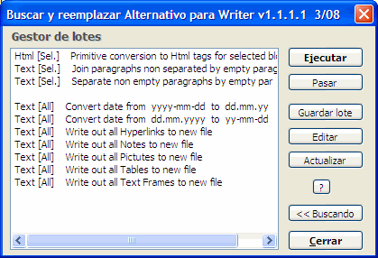

(Diálogo buscar y reemplazar alternativo para Writer)
versión 1.1
| Qué ofrece esta extensión | Buscar | Reemplazar | Modo por lotes | Limitaciones | Historial de cambios |
Autor: Tomas
Bilek – © 2007-2008
Licencia:
LGPL, ver
http://www.volny.cz/macrojtb/0gnu-lgpl_en.html
Esta macro se distribuye con la esperanza de que sea útil, pero SIN NINGUNA GARANTIA.
Nota del traductor: Esta traducción se ofrece sin ninguna garantía, úsela bajo su propio riesgo. En caso de duda consulte la ayuda original en la página del autor.
La posibilidad de seleccionar rápidamente expresiones regulares y ampliadas preestablecidas
Cuenta ocurrencias con el botón [ Contar ]
El texto buscado o reemplazado puede contener uno o más párrafos
La posibilidad de representar el carácter de búsqueda o reemplazo en formato hexadecimal o decimal
Búsqueda de saltos de página y columna manuales y su configuración o desactivación
Búsqueda de bloques de párrafos delimitados por dos marcas de texto
La posibilidad de ampliar o reducir la selección del texto encontrado en un número previsto de caracteres
Búsqueda y reemplazo múltiple de un paso
Búsqueda de: Notas, Campos de texto, Referencias cruzadas y Marcas de referencia por su contenido, nombre de marca y su inserción
Búsqueda de objetos como Tablas, Imágenes y Nombres de marco por su nombre; es posible sustituirlos por cualquier texto, contenido de texto, nombre de objeto, contenido del portapapeles
Búsqueda e inserción de Nota al pie y Nota final (sólo desde la versión OOo 2.3). Es posible seleccionar de una vez textos de todas las notas al pie o notas finales y asignarlas cualquier estilo
La posibilidad de búsqueda de formato similar o del mismo formato de texto, en función de la posición del cursor.
Manejo de subexpresiones dentro de paréntesis () como una referencia \# en el texto reemplazado
La posibilidad de cambiar en el texto buscado o reemplazado: estilo de párrafo, estilo de carácter, estilo de lista y URL de Hiperenlace y establecer propiedades de texto
La posibilidad de insertar al reemplazar: contenido del portapapeles, insertar contador de reemplazo y número de página
La posibilidad de redirigir el resultado de expresión de reemplazo a otro archivo de texto
Modo por lotes: Guardar y cargar parámetros de búsqueda y reemplazo; se pueden guardar varias búsquedas y reemplazos en una única secuencia para poder ejecutar ese bloque después rápidamente.
Consejo para atajos de teclado para uso más frecuente:
1. Abrir diálogo Herramientas - Personalizar - Teclado
2. En el campo Área abrir consecutivamente Macros de OOo - User - AltSearch - AltSearch
3. En el campo Función
seleccionar y asignar con el botón Modificar:
_AltSearch y
asigna enlace directo Ctrl+H (abrir diálogo Buscar);
_FindNext y
asigna enlace Ctrl+G (encontrar siguiente ocurrencia hacia delante,
sin el diálogo abierto);
_FindBack y asigna enlace directo
Ctrl+Mayúsculas+G (encontrar siguiente ocurrencia hacia atrás, sin el
diálogo abierto);
contiene expresiones usadas frecuentemente o expresiones regulares complicadas o parámetros que se suministran. Tras elegir la entrada los parámetros correspondientes se pasan al campo de entrada (o a ambos campos). Éstos pueden ser insertados de varios modos: al principio, al final, en la posición del cursor o al texto original que se reemplaza completamente. Al mismo tiempo se activa la opción "expresiones regulares“.
Lista desplegable Normal
contiene algunas expresiones regulares útiles. Su descripción está disponible en la ayuda de OOo bajo el título Lista de Expresiones Regulares.
Limitación:
La sintaxis usada en expresiones regulares no es
totalmente compatible con la de OOo original. Los problemas se dan
especialmente con búsquedas, cuando se usan comodines *
+ ? {n,n} cerca de una subexpresión
anterior encerrada entre paréntesis ().
P.e . (Mi)?ster
no se encontrará (sin embargo, cuando se usa [
Contar ] devolverá la cuenta correcta
- esta función sólo está usando el modo compatible). Además, si se
buscan subexpresiones del tipo (.*)algo
o (.+)algo
entonces se encuentra la ocurrencia más corta que
cumpla la condición, contrariamente a OOo estándar, que encontrará la
ocurrencia más larga que la cumpla. Si es necesario conservar la
compatibilidad, se puede delimitar completamente la expresión de
búsqueda con un par de paréntesis extra: ((Mi)?ster).
Con ello se perderá, por supuesto, la oportunidad de citar la
subexpresión en la expresión de reemplazo como la referencia, \#
donde # es el número de referencia (max. 9) de la
subexpresión. También es imposible usar al mismo tiempo referencia a
la subexpresión (entre paréntesis ())
en la expresión de búsqueda y en la de reemplazo. Ver también
subexpresiones.
Otros parámetros, comodines especiales:
\l - representa cualquier carácter alfabético; es lo mismo que [:alpha:]{1,1}.
\d - representa un dígito decimal; es lo mismo que [0-9].
\p - representa la marca de terminación de párrafo,
al contrario que OOo estándar $, es capaz de representar también un párrafo vacío. Se pueden usar los comodines +, *, {min,max}.
\p{1,} - buscará el final de párrafo más cercano seguido de un bloque ilimitado de párrafos vacíos. Es lo mismo que \p*.
\p{2,4} – buscará el final de párrafo más cercano seguido de al menos uno, máximo tres párrafos vacíos; entonces serán en total como mínimo 2 y como máximo 4 párrafos uno tras otro.
Limitación: Lento al usarse por separado. Algunas veces hay problemas al buscar en dirección hacia atrás.
\xhhhh – permitirá introducir el código de carácter con un número hexadecimal (como hhhh)
\#ddddd - permitirá introducir el código de carácter con un número decimal (como ddddd)
Si el siguiente carácter no es un dígito, no es necesario llenar las 5 posiciones de ddddd. En otro caso es necesario rellenar con ceros desde la izquierda.
\c – búsqueda de salto de columna manual. Limitación: Lento al usarse por separado.
\m – búsqueda de salto de página manual.
Limitación: Lento al usarse por separado. Si se usa la subexpresión (), el parámetro \m debe estar al principio de la cadena de búsqueda, o no puede estar solo: \m(...) pero no (...)\m.
\s - representa cualquier espacio: espacio, espacio de no separación, tabulador, salto de linea manual.
Es lo mismo que [ \xA0\x9\xA].
\S – representa el carácter: espacio de no separación (\x00A0 o \#160)
Lista desplegable Ampliado
[::BigBlock::] - busca bloques de párrafos (longitud ilimitada), delimitados por algún texto conocido
inicio[::BigBlock::]fin - en primer lugar busca inicio y tras encontrarlo busca fin. Si encuentra ambos, se marca el bloque completo.
En la cadena de reemplazo se pueden usar los parámetros \b, &, \e para insertar el contenido de inicio, bloque de párrafos encontrado, fin.
Limitación: Es imposible usar el signo || para búsquedas y reemplazos múltiples, ver más abajo.
[::Grow n1,n2::] - el bloque de texto encontrado será expandido n1 caracteres a la izquierda y n2 caracteres a la derecha
[::Grow -1,-1::]texto – si la palabra existe en el texto se encontrará texto, pero sólo se marcará ext.
Limitación: [::Grow... es necesario usarla siempre al principio de la cadena de búsqueda y tras ella la expresión de búsqueda. Si los desplazamientos establecidos producen números negativos, puede ocurrir (dependiendo del tamaño y de contenido de la expresión de búsqueda) que en la siguiente búsqueda se encuentre cíclicamente en el mismo lugar.
texto1||texto2||texto3||… - búsqueda y reemplazo múltiple en un paso
Esta opción añadirá al final de las expresiones de búsqueda y de reemplazo el signo ||, que delimita la búsqueda y el reemplazo parcial.
Buscar:
texto1||texto2||texto3
Reemplazar con: cambio1||cambio2||cambio3
Al efectuar la búsqueda texto1
será reemplazado por cambio1,
al continuar buscando texto2
será reemplazado con cambio2
etc.
Limitación: es imposible usar aquí el parámetro [::BigBlock::], al igual que es imposible usar subexpresiones.
Búsqueda de algunos Objetos
[::Note::] - búsqueda de notas de texto (cuadros amarillos) en función de su contenido
[::Note::] - buscará cualquier nota de texto
[::Note::]poco. - buscará la nota de texto que contenga la subcadena poco.
Limitación: Sólo busca subcadenas en el contenido de notas - es imposible usar expresiones regulares completas.
[::Field::] - busca campos de texto según su contenido
[::Field::] - buscará cualquier campo de texto común
[::Field::]oveja buscará un campo de texto que muestre en el documento el texto oveja
Limitación:
Es la misma que para [::Note::].
Ver anteriormente.
Cualquier campo especial (p.e. oculto) no se
encontrará.
[::TextFrame::] - busca marcos de texto según su nombre
[::TextFrame::] - buscará cualquier marco de texto
[::TextFrame::]marco1 - buscará cualquier marco de texto que contenga la subcadena marco1 en el nombre
Limitación: 1. al usar el botón [ Buscar ], encontrará el siguiente marco de texto sólo si el marco está seleccionado o el cursor está dentro del marco. Si está muy lejos en el texto, siempre se encuentra primero el marco de texto del la lista interna de marcos. Actualmente no funciona la opción "Sólo selección actual".
2. La utilidad practica del botón [ Reemplazar ] está, en consecuencia con el punto 1, severamente limitada.
3. Orden de las coincidencias de búsqueda (desafortunada y provisionalmente, espero) orden de inserción de los marcos de texto en el documento y no orden desde el principio del documento hasta el final, en función de las páginas.
4. Búsqueda sólo de subcadenas en el nombre del marco - es imposible usar expresiones regulares (normales) completas.
El uso de [ Buscar todosl ] y [ Reemplazar todos ] podría ser completamente funcional, inclusive la opción "Solo selección actual".
[::Picture::] - búsqueda de imágenes según su nombre
[::Picture::] - buscará cualquier imagen
[::Picture::]obra1 - buscará cualquier imagen que contenga la subcadena obra1 en su nombre
Limitación: Es la misma que para [::TextFrame::]. Ver anteriormente.
[::TextTable::] - búsqueda de tablas según su nombre
[::TextTable::] - buscará cualquier tabla
[::TextTable::]tabla1 - buscará cualquier tabla que contenga la subcadena tabla1 en su nombre
Limitación: Es la misma que para [::TextFrame::]. Ver anteriormente.
[::Footnote::] - búsqueda de notas al pie (NP)
[::Footnote::] buscará el ancla de cualquier NP
[::Footnote::]5 buscará el ancla de cualquier NP cuyo ancla contenga la subcadena 5
[::Footnote::]\\texto buscará el ancla de cualquier NP cuyo texto contenga la subcadena texto. Si se usa el botón [ Buscar todos ], se seleccionará el texto de todas las NP que contengan la subcadena text.
[::Footnote::]\\ con el botón [ Buscar todos ] se seleccionará el texto de todas las NP (práctico para asignación múltiple de estilo de párrafo a todas las NP)
Limitación: Funciona bien a partir de la versión 2.3 de OOo
[::Endnote::] - búsqueda de notas finales
El uso de parámetros y limitaciones son las mismas que para [::Footnote::]. Ver anteriormente.
[::ReferenceMark::] - búsqueda de marcador de destino de referencias cruzadas
[::ReferenceMark::] buscará cualquier texto establecido como marcador de referencia
[::ReferenceMark::]texto buscará texto establecido como marcador de referencia, que contiene la subcadena texto
[::ReferenceMark::]\\referencia1 buscará texto establecido como marcador de referencia, cuyo nombre contiene la subcadena referencia1
[::ReferenceMark::]\\\\ buscará texto establecido como marcador de referencia, cuyo texto está vacío
[::Reference::] - búsqueda de campo de texto (referencia cruzada) que hace referencia al marcador
[::Reference::] buscará todos los campos de texto de tipo referencias cruzadas
[::Reference::]sobre buscará referencia cruzada que contenga la subcadena sobre
[::Reference::]\\referencia1 buscará la referencia cruzada cuyo nombre contenga la subcadena referencia1
[::Reference::]\\\\ buscará la referencia cruzada, cuyo texto esté vació
Si se elige Referencia cruzada de la lista desplegable Ampliado al tiempo que el cursor está en cualquier texto que sea una marca de referencia, entonces automáticamente se insertará en el recuadro Buscar el nombre (de referencia) previamente introducido, y se podrá buscar inmediatamente.
Lista desplegable Propiedades
activa
la búsqueda en función de propiedades (atributos), eventualmente
también de sus valores.
El valor introducido debe comenzar por la
cadena [:::,
seguida de nombre
de la propiedad (más nombres separados usando el
signo |
)
y la cadena final ::].
Tras ella puede seguir la especificación del texto buscado. Si debe
buscarse un valor concreto de propiedades, se usará la construcción
nombre=valor
.
[:::HyperLinkURL::] - busca dentro del texto aquella parte con el atributo HyperLinkURL
[:::HyperLinkURL::] - encontrará todos los hiperenlaces
[:::HyperLinkURL::]enlace – encontrará la parte del hiperenlace que contenga el texto enlace.
[:::HyperLinkURL=file:///c:/archivo.odt::] - encontrará el hiperenlace cuya URL contenga la subcadena file:///c:/archivo.odt.
[:::HyperLinkURL=file:///c:/archivo.odt::]enlace encontrará la parte del hiperenlace en cuya URL se encuentre la subcadena file:///c:/archivo.odt y que contenga el texto enlace.
La lista de los atributos de texto disponibles con sus valores actuales (de acuerdo a la selección actual) se puede cargar usando el botón [ Escoger propiedad ] y se mostrará al lado en una lista desplegable. En su mayoría se puede encontrar su descripción resumida aquí.
Formato de carácter similar - esta función carga cualquier atributo de carácter cambiado a mano (en función de la selección actual) para buscar lugares formateados de modo parecido. Si p.e. el cursor está en lugar cuyo nombre de fuente se ha cambiado a mano, se buscarán todos los lugares con el mismo nombre de fuente [:::CharFontName::] cambiados a mano.
Mismo formato de carácter - esta función carga cualquier atributo de carácter cambiado a mano (según la selección actual) para buscar lugares formateados del mismo modo. Si p.e. el cursor está en un lugar cuyo nombre de fuente se ha cambiado a mano, se buscarán todos lugares con nombre de fuente cambiado a mano y con el mismo nombre de fuente [:::CharFontName=Arial::].
Limitación: No están soportadas todas las propiedades de carácter y de párrafo que soporta el motor de búsqueda de OOo. No todas sus combinaciones funcionan de acuerdo a lo esperado y bien.
Lista desplegable Reemplazar
& \0 – ambos parámetros significan lo mismo – en el reemplazo representan el texto completo encontrado
Si la expresión se buscó usando [::BigBlock::] entonces estos parámetros representan sólo el bloque de párrafos entre las marcas inicial y final.
Si el objeto se buscó usando [::Note::], [::Field::], [::TextFrame::], [::Picture::], [::TextTable::] entonces estos parámetros representan directamente estos objetos (introducir mediante el portapapeles).
\b \e – Si la expresión se buscó usando [::BigBlock::] entonces estos parámetros representan el contenido de las marcas inicial y final. Limitación: es imposible usando subexpresiones ().
\1 \2 \3 \4 \5 \6 \7 \8 \9 – contenido de subexpresiones
Si la expresión de búsqueda se buscó usando paréntesis (), entonces\1 representa el contenido correspondiente a el primer par de paréntesis, de modo similar \2 corresponde a el segundo par () etc., máximo \9 corresponde a el 9º par. Sólo es valido el 1er nivel de paréntesis, los siguientes niveles anidados se ignorarán.
Ejemplo:
Mediante
de la expresión (\d{1,2})\.
*(\d{1,2})\. *\d{2,2}(\d{2,2}) se
puede encontrar fecha en formato 01. 12.
2007 y reemplazar con 07-12-01 mediante
la expresión de reemplazo \3-\2-\1.
Si se tiene que desactivar el procesado de subexpresiones (p.e. para compatibilidad de base con expresiones regulares en OOo estándar) es necesario insertar la expresión completa de búsqueda en un par de paréntesis adicionales (). Todos los demás niveles de paréntesis anidados se ignorarán.
Limitación: El uso de subexpresiones es relativamente lento y no es completamente compatible con la búsqueda original de OOo.
La incompatibilidad al buscar con comodines inmediatamente detrás de una subexpresión (sal)* está causada por el principio búsqueda secuencial consiguientes bloques de textos, ver esto. En estos casos las funciones [ Contar ] y [ Buscar todos ] devuelven la cuenta real correcta mientras otro sin cambiar a modo de compatibilidad no encontrará nada. En casos más complicados es necesario examinar el comportamiento, y verificarlo experimentalmente.
\p – inserta un párrafo vació
\t – inserta un tabulador (\x0009 \#9)
\s – inserta un espacio de no separación (\x00A0 \#160)
\n – inserta un salto de linea manual (\x000A \#10)
\c - activa salto de columna manual "anterior" en los párrafo(s) encontrado(s)
\m - activa salto de página manual "anterior" en los párrafo(s) encontrado(s)
\M - activa salto de columna manual "posterior" en los párrafo(s) encontrado(s)
\r – desactiva salto manual de columna o página en los párrafo(s) encontrado(s)
\xhhhh – inserta con código hexadecimal de número (como hhhh)
\#ddddd - inserta con código decimal de número (como ddddd).
\h{direcciónURL} – establece el texto encontrado como hiperenlace el cual apunta a la URL direcciónURL
\h{}, \h establece el texto encontrado como hiperenlace el cual ahora apunta a la URL cadena vacía - borra la URL de hiperenlace (por supuesto el texto del hiperenlace permanece sin cambios).
\H{subcadena} – reemplaza la subcadena en la URL del hiperenlace
Es necesario usarlo junto con la búsqueda por [:::HyperLinkURL=::].
Si la expresión se buscó p.e. usando [:::HyperLinkURL=subcadena::], entonces se encontrarán sólo hiperenlaces cuya URL incluya la subcadena subcadena . Usando \H{cambiada} en la expresión de reemplazo buscará en la URL el texto subcadena y lo reemplazará con cambiada.
\u – inserta en la expresión de reemplazo la dirección URL del texto encontrado (si se encuentra el hiperenlace)
\P{Texto} – establece el estilo de Párrafo (Texto) en el/los párrafo(s) encontrado(s)
El estilo se aplica en el párrafo en el cual está el texto de la expresión de reemplazo. Se puede usar \P o \P{} para establecer el estilo "Predeterminado". Si se usa este parámetro un número de veces con párrafo(s) insertado(s), entonces se cambia el estilo con cada nuevo parámetro, que es válido hasta el final del párrafo. Ejemplo: Si la expresión se reemplazó usando bloque1\P{Subtitulo}\p bloque2\P{Encabezado 1} entonces en el documento se insertará bloque1 asignándole el estilo Subtitulo y tras ello se insertará un nuevo párrafo con el texto bloque2 y el estilo asignado Encabezado 1.
\C{Destacado} – establece el estilo de Carácter (Destacado) en el texto encontrado
El estilo se aplica al texto completo de la expresión de reemplazo. Para establecer el estilo "predeterminado" se puede usar \C o \C{}. Si se usa este parámetro un número de veces, entonces el estilo de se cambia con cada nuevo parámetro, y el último es valido hasta el final de las expresiones de reemplazo. Ejemplo: Si la expresión se reemplazó usando bloque1\C{Destacado}bloque2\C{Ejemplo} entonces se insertará en el documento bloque1 con el estilo Destacado, tras ello se insertará el texto bloque2 con el estilo asignado Ejemplo.
\N{Enumeración 3} – establece el estilo de Lista (Enumeración 3) en el/los párrafo(s) encontrado(s)
Se aplican reglas de uso análogas a las del parámetro \P{}. El estilo de Lista se puede eliminar usando \N o \N{}.
\D – establece el formato predeterminado por defecto para el texto buscado, como con Ctrl+Mayúsculas+Espacio
Se aplican reglas de uso análogas a las del parámetro \C{}.
\d – restablece atributos de texto a los predeterminados sólo en el lugar de uso.
Contrariamente a \D no tiene ningún efecto en el texto insertado previamente.
\F{Nueva nota al pie} – inserta una nueva nota al pie que contiene Nueva nota al pie en el lugar de reemplazo
En el interior de las llaves se pueden usar parámetros tales como \i, \I, &, o \1
\E{Nueva nota final} - inserta nueva nota final en el lugar de reemplazo, análoga a \F
\B{referencia1|texto} – inserta el texto texto que representa el marcador de nombre referencia1 para referencias cruzadas
En el interior de las llaves se pueden usar parámetros tales como \i, \I, &, o \1
\L{0,0,referencia1} – inserta (campo de) referencia cruzada con los parámetros 0,0 y nombre de marcador de referencia referencia1
Significado de parámetros numéricos
primer número – tipo de referencia: 0 – números de página arábigos, 1 - número de capítulo, 2 – el texto de referencia , 3 - encima/debajo, 4 – número de página que usa un tipo de numeración definida en estilo de página, 5 – categoría y número de un título, 6 – el texto de título, 7 – número de un campo de orden (título)
segundo número – tipo de origen de un campo de referencia; el origen es: 0 – una marca de referencia, 1 – un número de campo de orden/secuencia, 2 – un marcador, 3 – una nota al pie, 4 – una nota final
\o – inserta el contenido de texto de objeto encontrado
Si la expresión se buscó usando [::Note::], [::Footnote::], [::Endnote::], [::TextFrame::], [::Picture::], [::TextTable::] entonces se insertará el texto que contienen estos objetos. Una tabla se convierte usando tabuladores entre columnas y párrafos entre filas.
Limitación: El tamaño máximo resultante de conversión de tablas está limitado a 65 kB en total.
Si la expresión se buscó usando [::Field::], [::Reference::], [::ReferenceMark::] entonces se insertará el texto mostrado del ancla o del campo.
\O – inserta el Nombre de objeto encontrado
Si la expresión se buscó con la ayuda de
[::TextFrame::], [::Picture::], [::TextTable::] - se insertará el nombre de este objeto.
[::Note::], [::Field::] - se insertará la especificación del tipo del campo de texto
[::Reference::], [::ReferenceMark::] - se insertará el nombre de la marca de referencia
[::Footnote::], [::Endnote::] - se insertará el texto mostrado del ancla
\i – inserta el contador de ocurrencias encontradas – sólo si se usa [ Reemplazar todos ]
\I – inserta en número de página, en el que se encuentra la expresión de búsqueda
Si se usa Redirigir la expresión de reemplazo(\R), entonces se insertará el número de página de la posición de inicio del texto encontrado.
Limitación: No funciona correctamente en notas al pie, encabezamientos y pies de página.
\v – inserta el contenido del portapapeles
\V - inserta el contenido del portapapeles como texto sin formato
\f – conserva el formato
Si se usa & o \0 en la expresión de reemplazo, entonces el reemplazo se realizará sobre el portapapeles. Si el texto encontrado contiene campos de texto, notas, referencias etc, podrían ser preservados en su estado original.
\R – Redirige la expresión de reemplazo a otro fichero de texto
Esta opción provoca la escritura de la expresión de reemplazo al nuevo archivo .ODT en lugar de de reemplazarla en el lugar en que la encuentre. El archivo original debería permanecer sin cambios. Se puede introducir el nombre del archivo con \R{Nombre_de_archivo}. El nombre debe tener el formato preciso de la ventana de OOo terminado en " - OpenOffice.org Writer". Los registros se añaden siempre al final del archivo.
Ejemplo:
Si
la expresión de búsqueda se buscó utilizando [:::HyperLinkURL::]
y la expresión de reemplazo fue Enlace
\i, página \I: & (URL: \u)\p\R,
entonces tras pulsar el botón [ Replace
all ] se escribirá en un nuevo
archivo todos los hiperenlaces encontrados en el archivo original, en
el siguiente formato: Enlace 1, página
1: textoDelHiperenlace (URL: direcciónURL) en
párrafos separados.
Botón y Lista desplegable Escoger propiedad
Mediante el botón [ Escoger propiedad] se puede actualizar la lista de (algunas) propiedades y sus valores del objeto recién seleccionado. Se puede hojear y elegir desde la lista desplegable lateral.
\A{propiedad=valor} – establece en la expresión de reemplazo el valor de la propiedad especificada.
Aplica el uso de reglas análogas a las del parámetro \C{}.
El modo por lotes permite guardar y cargar parámetros preestablecidos de búsqueda y reemplazo. Se pueden guardar varias búsquedas y reemplazos en orden en una única secuencia y después rápidamente cargarla y ejecutarla.
Se pueden guardar los valores actuales de todos los parámetros utilizando el botón [ Guardar lote ]. En el diálogo que se mostrará, se ofrece renombrar el nombre del último lote usado. Si el nombre que se introduce ya existe, se puede elegir, si reescribir el antiguo contenido o si conservarlo y añadir el nuevo contenido al final. Se guarda el lote de modo que cuando se vuelva a ejecutar se usa la función (botón) por defecto "Reemplazar todo". Este comando puede cambiarse más adelante editando el fichero de reglas del lote.
El botón [ Lotes >> ] cambiará al diálogo Gestor de lotes donde se pueden ejecutar y editar lotes. Se puede volver al diálogo de búsqueda usando el botón [ << Búsqueda ].
Todos los parámetros del lote se guardan en el fichero de texto AltSearchScript.txt dentro del directorio de usuario …/OpenOffice.org2/user/config/, el cual puede ser abierto y editado desde el diálogo Gestor de lotes, usando el botón [ Editar ]. Para la edición está preestablecido el editor notepad, sin embargo se puede establecer cualquier otro editor de texto, editando el archivo AltSearchEditor.ini en el mismo directorio. Tras cambiar manualmente y guardar el fichero de lotes se puede actualizar la lista de nombres de lotes con el botón [ Actualizar ]. La sintaxis usada en el archivo AltSearchScript.txt está descrita en su propio comienzo, codificado en UTF-8 (desde v1.1.1).
Tras hacer doble click en la lista de elementos, o mediante el botón [ Ejecutar], se cargará la secuencia elegida, y se ejecutarán las búsquedas y reemplazos. Cuando se usen lotes en un área seleccionada se aconseja dejar al principio y tras el final de la selección uno o dos párrafos vacíos.
El botón [ Pasar ] se usa para transferir los parámetros de búsqueda, reemplazo y valores a el diálogo de búsqueda sin ejecutarlo realmente. Si el lote contiene una secuencia de varias búsquedas y reemplazos sólo se transferirá la última parte de la secuencia.
Si las limitaciones ya se conocen, en su mayoría se citan cerca de la descripción de parámetros individuales. Generalmente se aplica:
Si está activada la opción “Sólo selección actual”, entonces no se encontrará textos que estén dentro de marcos o tablas, incluso si estuvieran dentro de los bloques seleccionados. La búsqueda dentro de bloques sólo está delimitada dentro del mismo área de texto que el bloque seleccionado. La selección múltiple de bloques no está soportada.
La función "Buscar todos" fallará al seleccionar una marca de párrafo \p, porque para la selección se usa la propiedad "Resaltado" (color de fondo de carácter) que es imposible usar para marca de párrafo. Por lo tanto continua, ademas, la limitación para estas funciones sólo a textos, donde la propiedad "Resaltado" no se usa. Si el documento contiene resaltado, cuando se use “Buscar todos” aparecerá un diálogo de advertencia.
Al reemplazar las expresiones más complicadas la función "Deshacer" se descompone en pasos parciales de reemplazo, entonces ocurre fácilmente que el número de pasos de deshacer no coincidirán al restaurar al estado original.
Versión 1.1.1 3/08
Novedades:
Traducción al Ruso
Errores corregidos:
casca cuando durante la ejecución de la búsqueda o reemplazo se abre o se cambia a otro fichero OOo de texto
el archivo con parámetros de lote guardados .../config/AltSearchScript.txt desde ahora se codifica en UTF-8
Versión 1.1 2/08
Novedades:
búsqueda: parámetro \l para buscar cualquier alfabético
búsqueda: parámetro para texto o nombre de marcas de Referencia y Referencias cruzadas
búsqueda: parámetro para Notas al pie y Notas finales. Funciona bien desde la versión 2.3 de OOo
reemplazo: parámetro \d para restablecer los atributos de texto a predeterminado
reemplazo: parámetro \F{} y \E{} para crear Notas al pie y Notas finales (parámetro cambiado para conservar formato de \F a \f )
reemplazo: parámetro \B{etiqueta|texto} para insertar Marca de referencia y \L{1,0,etiqueta} para insertar campo de texto de Referencia cruzada
Errores corregidos:
soporte para introducir un número hexadecimal (&Hnnnnnn) dentro del parámetro de reemplazo \A{}
soporte para usar \} y \I dentro de los parámetros de reemplazo \P{}, \C{}, \F{}
con "Buscar todos" para propiedades NEGRITA etc. no se muestra el mensaje con el número de coincidencias
aumentada la altura del botón "Escoger propiedad" y texto recortado "?" debajo en win XP
mensaje de error y fallo de lotes en traducciones diferentes de EN y CS
al buscar Notas, Campos de texto, Marcas de Referencia, Referencias cruzadas, Notas al pie, Notas finales mediante el botón "Buscar" se procede según el orden de la página, soportándose la búsqueda dentro de una selección
al buscar: \ptexto y reemplazar con: & se inserta un salto de linea extra después del párrafo
al buscar: \p y reemplazar con: \p\p ocurre un bucle infinito
al buscar: (texto)\p y reemplazar con \1 ocurre el mensaje de error repldo: lin: 2842
bucle de búsqueda infinito al buscar: ^.*$ y reemplazar con: x&x
Versión 1.0 12/07 – Primera distribución Pública